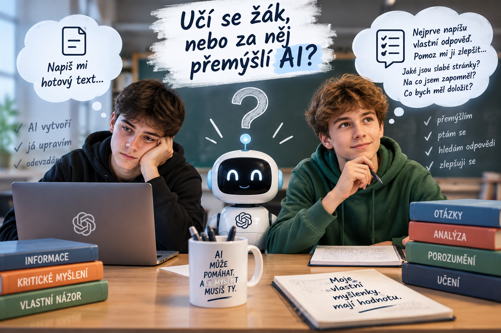
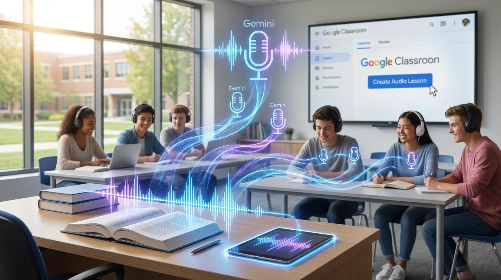
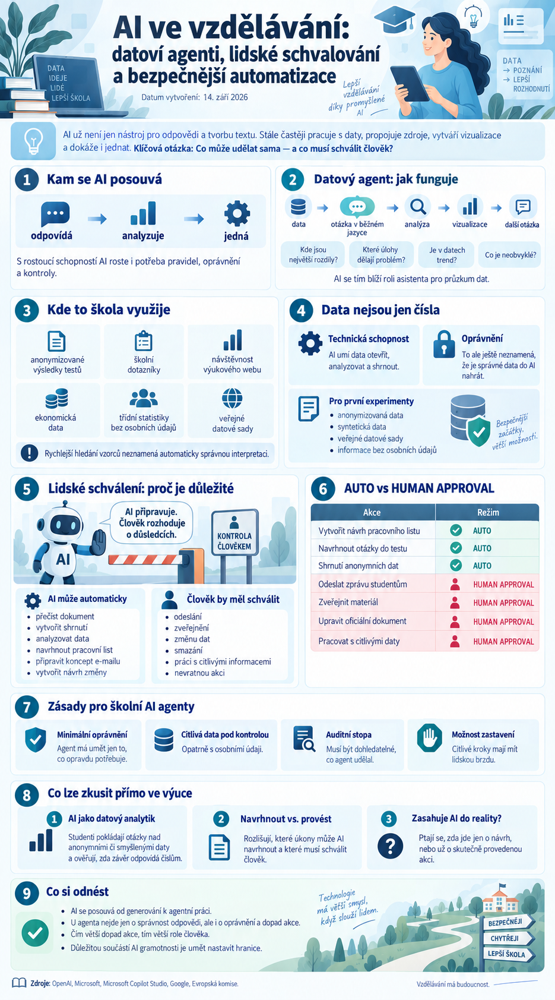
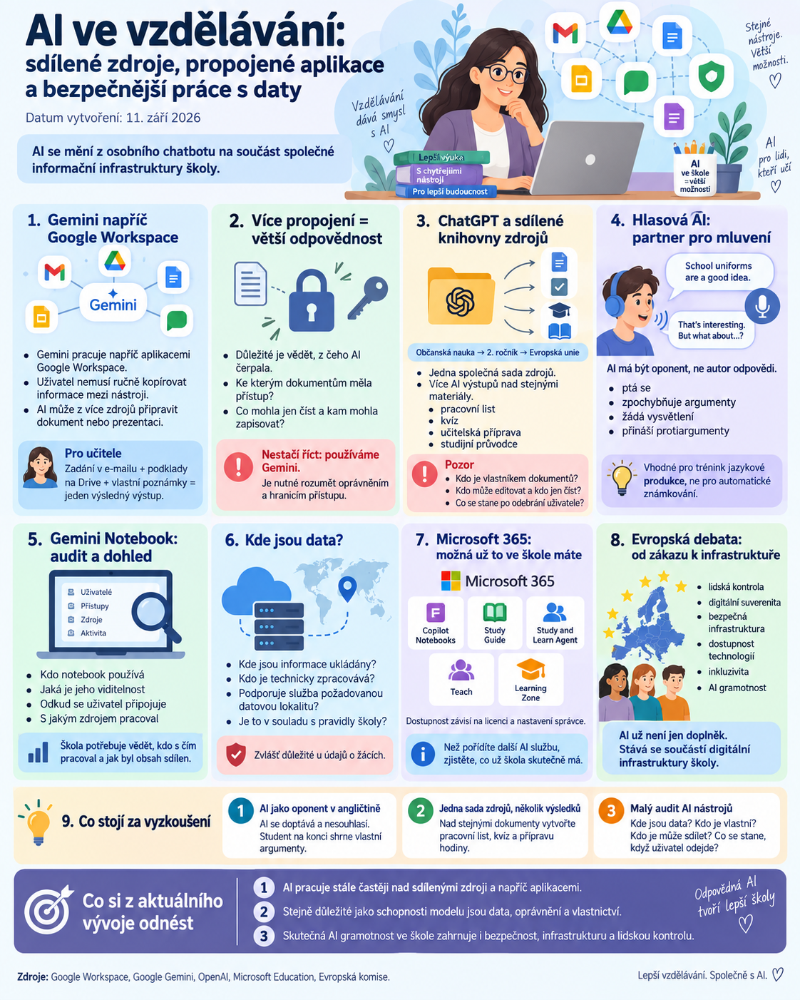
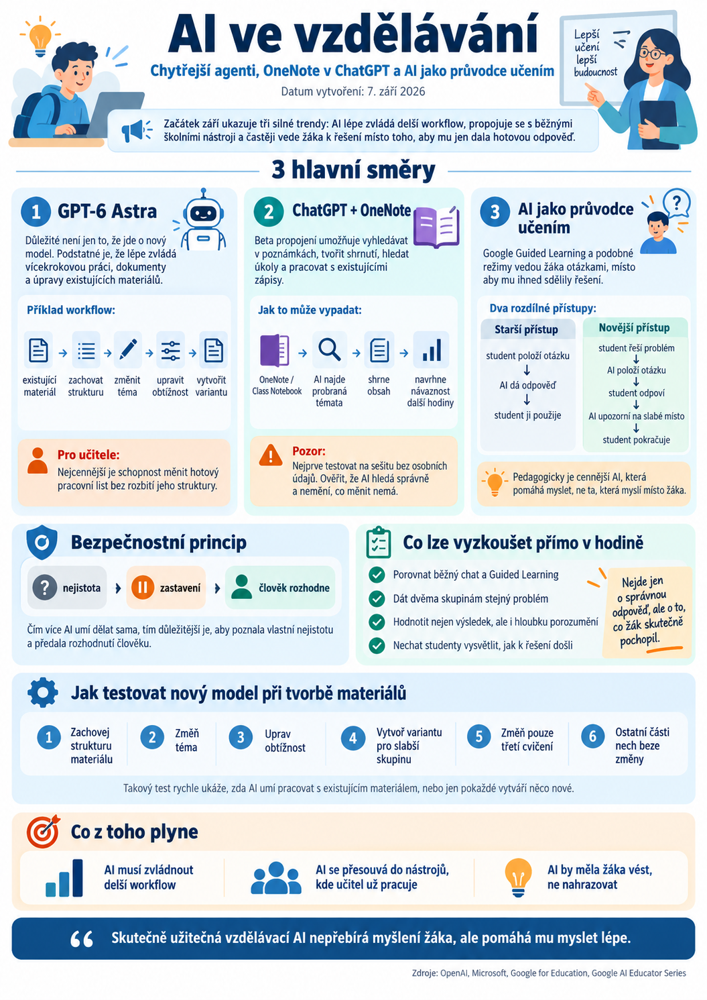
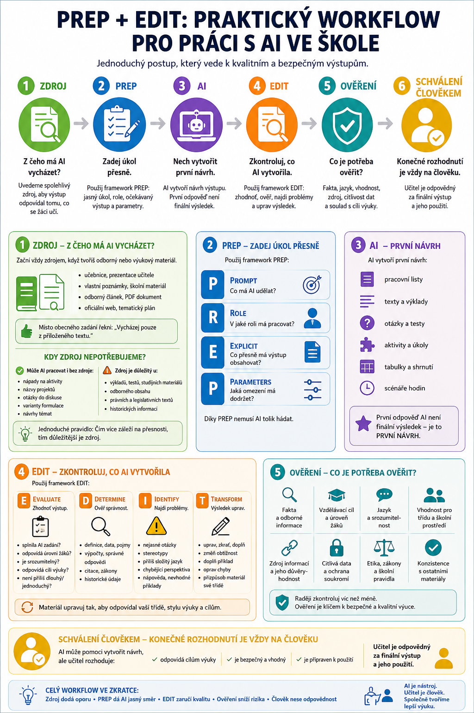
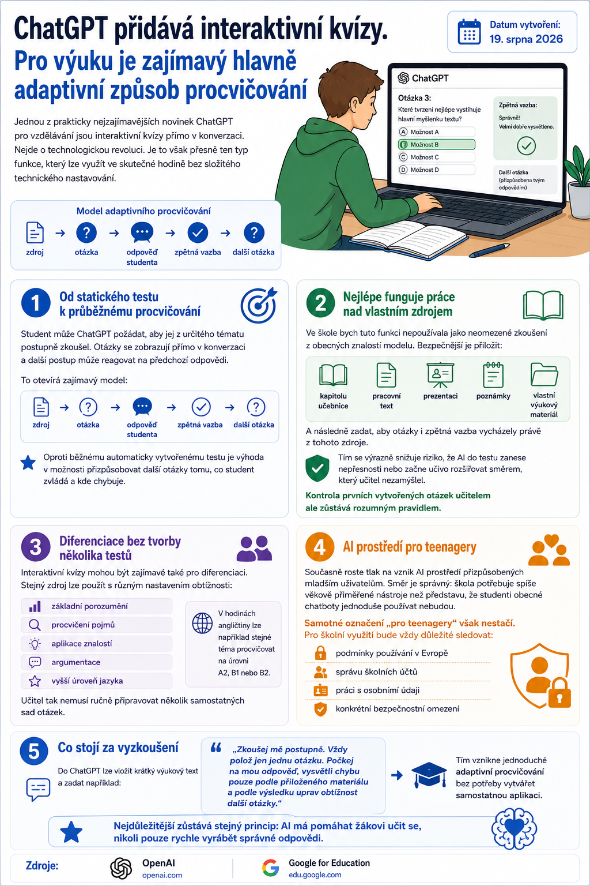
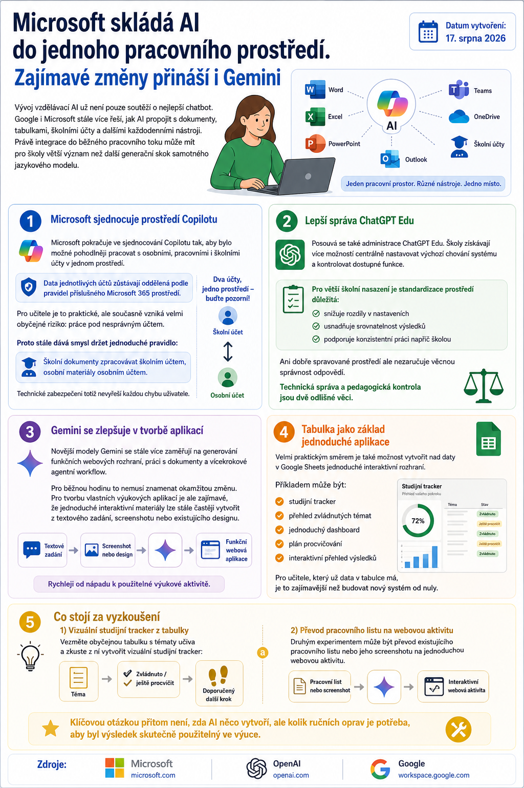

AI nemá za žáka přemýšlet. Má mu dát důvod přemýšlet.
Jak využít umělou inteligenci k probuzení zvídavosti, samostatnosti a skutečného zájmu o učení. Sedm principů, ukázka hodiny, tři prompty a infografika pro učitele.
Číst článekAI ve výuce 2.0 · Magazín
Témata, která pomáhají učitelům rozumět tomu, co se v AI mění a co z toho může být užitečné ve škole.
Nenašli jsme žádné články. Zkuste upravit hledaný výraz nebo filtr.
Magazínové články
Novinky a autorské texty o AI ve vzdělávání, novinkách a filozofování s AI.
Jak využít umělou inteligenci k probuzení zvídavosti, samostatnosti a skutečného zájmu o učení. Sedm principů, ukázka hodiny, tři prompty a infografika pro učitele.
Číst článek
Insight Summaries v Gemini Notebooku a Google Classroom: přehled práce žáků, individuální rozhovory, formativní hodnocení a otázky soukromí. Praktický příklad a přehledná infografika.
Číst článek
Co si mohou učitelé odnést z postupů profesionálních tvůrců videí? Praktický pohled na pozornost, scénáře, interaktivitu a využití AI při tvorbě výukových materiálů – bez zbytečných marketingových triků.
Číst článekTři úrovně autonomie AI agenta, lidský dohled, oprávnění a odpovědnost ve škole.
Číst článek
Jak poznat, kdy umělá inteligence podporuje učení a kdy už přebírá práci studenta.
Číst článek
Praktické aktivity pro cizí jazyky, pracovní pohovor, odbornou komunikaci, argumentaci, vysvětlování i nácvik obtížných situací.
Číst článek
Gemini přichází na Windows, ChatGPT do Wordu a Gemini Notebook rozšiřuje studijní možnosti. Praktické souvislosti pro učitele, oprávnění a ochranu školních dat.
Číst článekDruhý díl autorské série o tom, jak AI odhaluje práci a podpůrné role, které lidé vykonávali bez podpory a pro které jsme nikdy nevytvořili samostatné místo.
Číst článek
První díl autorské série o kritickém myšlení, Human in the Loop a další roli člověka v době AI.
Číst článek
Datoví agenti, lidské schvalování akcí a principy bezpečnější automatizace pro školy. Praktické souvislosti pro učitele.
Číst článek
AI se mění z osobního chatbota na součást společné informační infrastruktury školy. Důležitá jsou data, oprávnění, audit a lidská kontrola.
Číst článek
Přesnější editace existujících materiálů, kontextové zabezpečení Gemini a specializované AI nástroje pro učitele.
Číst článek
Chytřejší agenti, propojení ChatGPT s OneNotem a AI jako průvodce učením. Tři směry vývoje a praktické tipy pro učitele.
Číst článek
Novinky v AI pro vzdělávání: editace existujících materiálů, klasifikace dokumentů, řízení oprávnění a praktické tipy pro učitele.
Číst článek
Přehled novinek od Microsoftu, Googlu a OpenAI: AI jako tutor, práce se zdroji a postupné začleňování do školního prostředí.
Číst článek
Co má obsahovat dobrá školní politika pro žáky, učitele, vedení školy a rodiče v roce 2026.
Číst článek
Jak z učitelské přípravy vytvořit kopírovatelný AI studijní balíček pro každého studenta.
Číst článek
Jak propojit přípravu učitele, tvorbu aktivity, zadání studentům, práci žáka a výsledky.
Číst článek
Jak využít interaktivní kvízy, vlastní zdroje a průběžnou zpětnou vazbu pro učení.
Číst článek
Jak integrace AI s účty, dokumenty, tabulkami a nástroji mění každodenní práci školy.
Číst článek
Proč dostupnější výkonná AI mění školní zadání, detekci AI, bezpečnost i práci učitele.
Číst článek
Co znamená rozšiřování Gemini v Google Classroom pro mladší studenty, učitele a AI gramotnost.
Číst článekNové funkce má smysl posuzovat podle konkrétního přínosu pro výuku, ne podle samotného názvu nebo marketingu. Učitele obvykle zajímá, zda nástroj lépe pracuje s dokumenty, obrázky, hlasem, tabulkami nebo dlouhodobým kontextem.
Při každé aktualizaci si proto položte tři otázky: Jaký problém ve výuce řeší? Jaké podklady do nástroje vkládám? Jak ověřím výsledek před použitím se žáky?
Největší přínos AI ve škole často není v jedné „zázračné“ funkci, ale v rychlejší přípravě variant. Z jedné osnovy lze připravit jednodušší i náročnější zadání, otázky pro diskusi nebo podklady pro procvičení.
Výsledek vždy upravte podle věku žáků, cíle hodiny a reálného času. AI navrhuje možnosti; učitel rozhoduje, co patří do konkrétní třídy.
Do veřejných AI nástrojů nevkládejte osobní údaje žáků, citlivé školní dokumenty ani informace, podle kterých lze konkrétní dítě snadno identifikovat. Pokud je práce s daty nutná, řiďte se pravidly školy a používané služby.
Výstup AI není automaticky pravdivý ani pedagogicky vhodný. Ověřte fakta, jazyk, věkovou přiměřenost, možné zkreslení a způsob, jakým bude materiál použit ve třídě.